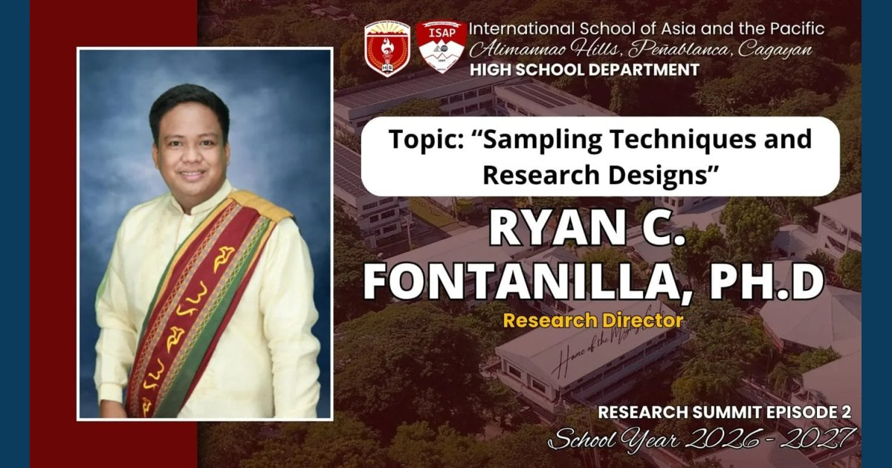

From Samples to Statistics: Turning Data into Meaningful Discoveries

The ISAP High School Research Summit–Episode 2, held online on August 28, 2026, featured Dr. Ryan C. Fontanilla on Sampling Techniques and Research Designs and Ms. Tshaine Anne T. Labang, LPT on Data Processing and Analysis using Excel, SPSS, and jamovi.
Read full article